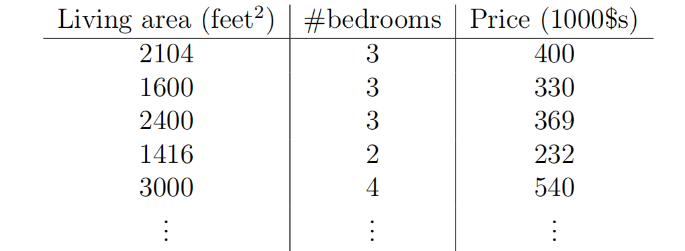
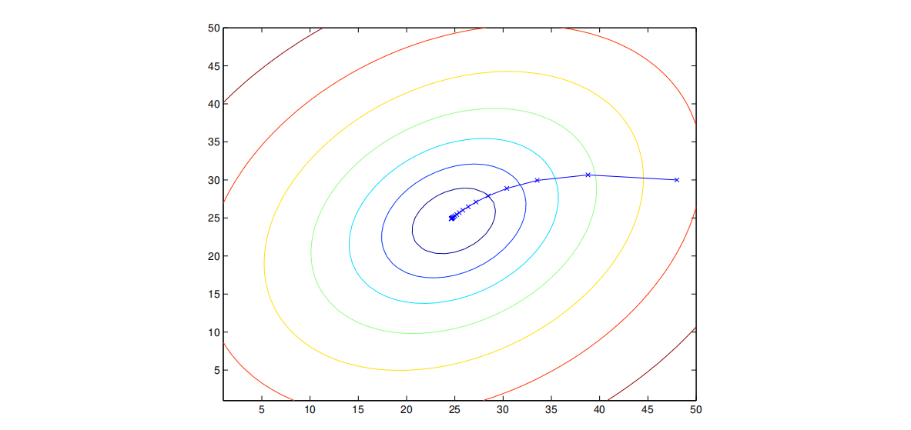
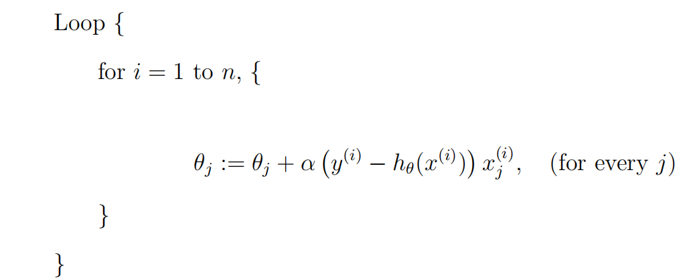
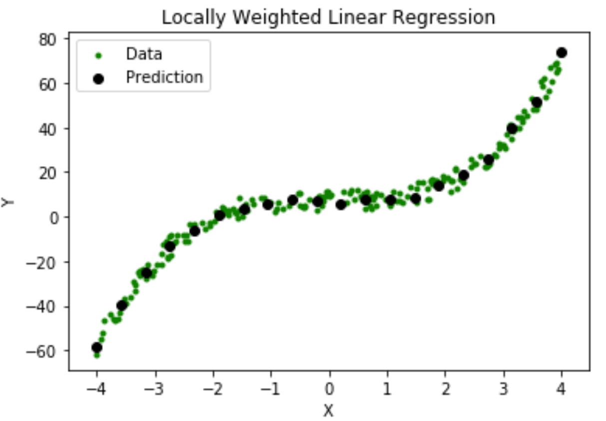

第一章
基本定义
\(x^{(i)}\)：输入变量
\(y^{(i)}\):输出变量；或者叫做目标变量
\((x^{(i)} ,y^{(i)})\):训练样例
n个训练样例的列表：\(\{(x^{(i)} ,y^{(i)});i=1,2,...,n\}\)称为训练集
\(\mathcal{X},\mathcal{Y}\):输入空间，输出空间
h:监督学习(supervised learning)的目标，即一个函数:\(\mathcal{X}\mapsto \mathcal{Y}\),使得给定x能够较好地预测到y。
regression problem:学习问题中目标变量是连续变量的。
calssification problem:目标变量(y)是离散的。
线性回归

比如对于上面这张图，我们采取： $$ h_\theta(x)=\theta_0+\theta_1 x_1+\theta_2 x_2 $$
这里的\(\theta\)称为parameter或者weights。为了方便表示，可以令\(x_0=1\),实际上就是消除它乘上\(\theta_0\)的影响，因此有： $$ h(x)=\sum_{i=0}^{d} \theta_i x_i=\theta^T x $$ 即将其视为向量内积，d表示维度。
一个重要的问题是：我们如何找到合理的h呢？
我们可以认为一个好的h总能使\(h(x^{(i)})\)接近对应的\(y_i\)，那么应该如何衡量呢？比如有下面一种衡量方式：
LMS方法
前面已经定义了一个损失函数（最小二乘损失函数），我们优化的过程当然就希望优化这个损失函数——沿着损失函数梯度的反方向优化自然是一种不错的方法，所以有： $$ \theta_j := \theta_j - \alpha \frac{\partial}{\partial \theta_j} J(\theta) $$
带入前面对\(J(\theta)\)的定义中，我们自然就能得到对于只有1个训练样本的情况，更新规则为： $$ \theta_j := \theta_j + \alpha \left( y^{(i)} - h_\theta(x^{(i)}) \right) x_j^{(i)} $$
对于有n个样本的情况： $$ \theta_j := \theta_j + \alpha \sum_{i=1}^{n} \left( y^{(i)} - h_\theta(x^{(i)}) \right) x_j^{(i)} $$
其中j=0,1，...,d。每一轮需要依据所有样本更新直到收敛。
This method looks at every example in the entire training set on every step, and is called batch gradient descent.
由于我们定义的损失函数是一个凸二次函数，局部最优解就是全局最优解，所以可以避免进入局部最优解。

上图就表示了一个收敛轨迹（圈圈是等高线）
当然也可以规定一个处理顺序来扫描到一组数据就进行及时地更新，而不必等到全部扫描完一遍再更新，前者叫随机梯度下降(stochastic gradient descent),后者叫batch gradient descent。前者如下：

The normal equations
也可以直接显式求解
对于一个函数 $ f : \mathbb{R}^{n \times d} \to \mathbb{R} $，它将 $ n \times d $ 的矩阵映射为实数，我们定义 $ f $ 关于矩阵 $ A $ 的导数为：
可见求导之后与A是同尺寸的矩阵。
定义一个设计矩阵，大小为\(n \times d\)(如果考虑截距项则为\(n \times d+1\))。我们可以把所有x的向量放进去，如下所示：
同样所有y也可以放到一个\(n \times 1\)矩阵： $$ \vec{y} = \begin{bmatrix} y^{(1)} \ y^{(2)} \ \vdots \ y^{(n)} \end{bmatrix} $$
那么我们就可以把估计与实际的差值表示在矩阵中：
进一步可以表示出\(J(\theta)\), $$ \frac{1}{2} (X\theta - \vec{y})^T (X\theta - \vec{y}) = \frac{1}{2} \sum_{i=1}^{n} (h_\theta(x^{(i)}) - y^{(i)})^2 = J(\theta) $$ 甚至可以表示出梯度： $$ \nabla_{\theta} J(\theta)=X^TX\theta-X^T\vec{y} $$
我们直接令方程为0，可以表示出\(\theta\): $$ \theta = (X^T X)^{-1} X^T \vec{y} $$
最大似然估计（MLE）与最小二乘关系
所谓概率，就是根据一些现实中的参数去推测某个未知事件（或参数）的发生情况分布；反之，似然就是指从已经发生的事情推断现实中的参数的分布。
在这里，比如说给定\(\theta\)时，由于受到噪声影响，我们会有一个y的分布；但反过来，如果我们已经知道y的结果，我们就希望找到什么样\(\theta\)会导致这样的结果。
具体而言，比如说满足 $$ y^{(i)} = \theta^T x^{(i)} + \epsilon^{(i)}, \quad \text{其中} \quad \epsilon^{(i)} \sim \mathcal{N}(0, \sigma^2) $$
我们可以写出\(\epsilon^{(i)}\)的密度函数： $$ p(\epsilon^{(i)}) = \frac{1}{\sqrt{2\pi}\sigma} \exp\left(-\frac{(\epsilon^{(i)})^2}{2\sigma^2}\right) $$ 这表明： $$ p(y^{(i)} \mid x^{(i)}; \theta) = \frac{1}{\sqrt{2\pi}\sigma} \exp\left(-\frac{(y^{(i)} - \theta^T x^{(i)})^2}{2\sigma^2}\right) $$ 因为这实际上就是一个简单的平移关系
我们可以按照本节最开始的思路进行视角变换（将一个以y的参数的函数重新视为以\(\theta\)为参数的函数）： $$ L(\theta) = L(\theta; X, \vec{y}) = p(\vec{y} \mid X; \theta) $$
为了找到最合理的\(\theta\),我们实际上就是希望最大化这个函数， 展开过程不费口舌描述，总之最大化\(L(\theta)\)的目标与最大化其对数一致，而实际上就是最大化
我们看到最小二乘回归实际上就是在执行最大似然估计。
局部加权线性回归
它是一种非参数算法（每次拟合都需要重新根据查询点周围情况调整权重） 
比如在上图中绿色点就是训练点，黑色点就是预测点。我们实际上就是赋予离预测点较近的训练点更高的权重：
最小化： $$ \sum_i w^{(i)} (y^{(i)} - \theta^T x^{(i)})^2 $$
往往w取： $$ w^{(i)} = \exp\left(-\frac{(x^{(i)} - x)^2}{2\tau^2}\right) $$
其中\(\tau\)控制权重随距离增加的衰减速度。
ps:前面的LMS方法作为线性方法，训练完成后只需要保留\(\theta\)即可，而现在的这种非参数方法需要保留训练数据。